Hôm nay, tròn 30 năm kể từ ngày Microsoft giới thiệu Windows 1.0 . Kỉ nguyên của máy tính đã khơi mào từ đó, và nhờ sự xuất hiện và phát triển của Windows đã giúp máy tính trở thành một công cụ không thể thiếu đối với mọi người. Và giúp Windows trở thành hệ điều hành được sử dụng nhiều nhất thế giới, 90.85%, bỏ rất xa OS X của Apple là 7.54% và Linux là 1.61% (theo số liệu thống kê của NetMarketShare tháng 7/2015)
I. 1982 - 1985: Windows 1.0
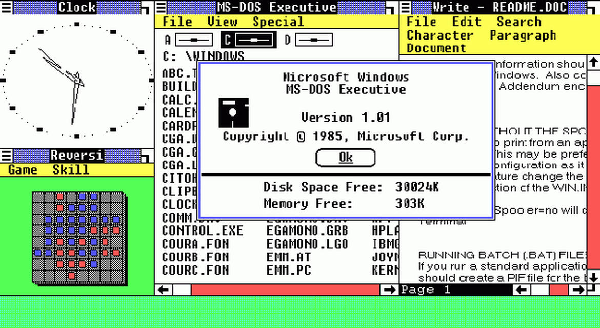
Sau khi ngưng phát triển MS-DOS vào năm 1981, Microsoft quyết định chuyển sang một dự án khác tốt hơn và mới lạ hơn thay vì ngồi phát triển một "hệ thống" dòng lệnh. Microsoft đã làm việc trong suốt một năm và vào ngày 20/11/1985, hãng đã ra mắt hệ điều hành đồ hoạ đầu tiên, Windows 1.0. Hệ điều hành sử dụng đồ hoạ theo phương thức "cửa sổ" trực quan thời điểm đó, hỗ trợ các thành phần đồ hoạ như icon, thanh cuộn,... Có một số phần mềm như Write, Clock, Calendar,... Thậm chí vẫn có thể sử dụng các lệnh MS-DOS. Hỗ trợ đĩa mềm 256KB.
II. 1987 - 1990: Windows 2.0 - 2.11
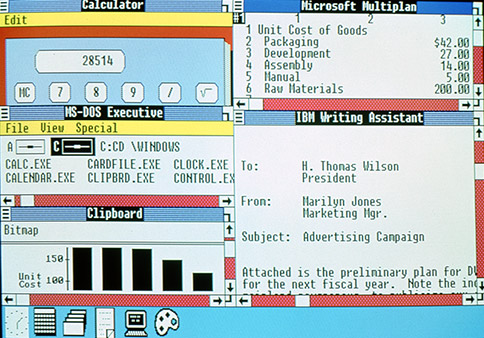
Phiên bản tiếp theo của Windows được ra mắt vào 09/12/1987, với một vài tính năng như cho phép in ấn tài liệu qua chương trình SPOOLER.EXE. Công cụ quản lý Control Panel.
III. 1990 - 1994: Windows 3.0 - Windows NT
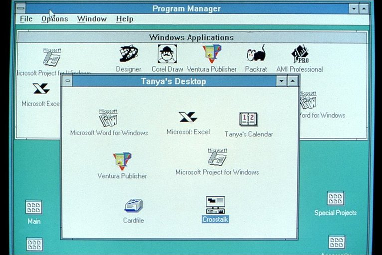
Vào 22/05/1990, Windows 3.0 chính thức ra mắt. Một điểm đáng chú ý trong phiên bản này đó là hỗ trợ folder, hai phần mềm Write và Multiplan đã đổi tên thành Word và Excel như ta biết thời nay. Hỗ trợ nhiều hơn cho các lập trình viên viết chương trình và driver cho Windows.
3 năm sau đó, Microsoft giới thiệu Windows NT dành cho môi trường doanh nghiệp với độ bảo mật cao. Phiên bản 3.11 của Windows NT hỗ trợ nền tảng 32 bit.
IV. 1995 - 1998: Windows 95
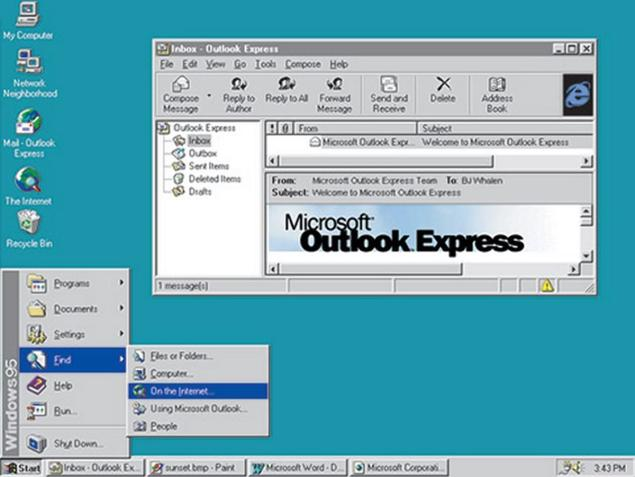
Windows 95 chính thức phát hành vào 24/08/1995. Là một trong những phiên bản có ảnh hưởng lớn đến lịch sử của Windows khi lần đầu tiên ra mắt Start Menu. Cùng với thanh taskbar mới, giao diện cửa sổ với ba nút minimize, maximize và close đã làm nên tên tuổi. Hỗ trợ các thiết bị plug and play, hỗ trợ ảo hoá.ư
Vào mùa hè năm 1995, Internet Explorer chính thức ra phiên bản đầu tiên thông qua một bản cập nhật.
V. 1998 - 2000: Windows 98, Windows 2000 và Windows Me
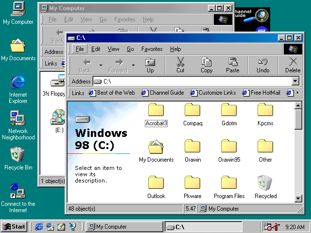
Ra mắt vào 25/06/1998, Windows 98 là một phiên bản hướng đến việc sử dụng Internet. Hỗ trợ thêm chuẩn USB, chạy được ổ DVD. Thanh Quick Launch cũng chính thức xuất hiện. Và đây cũng là phiên bản cuối cùng hỗ trợ nền tảng MS-DOS.
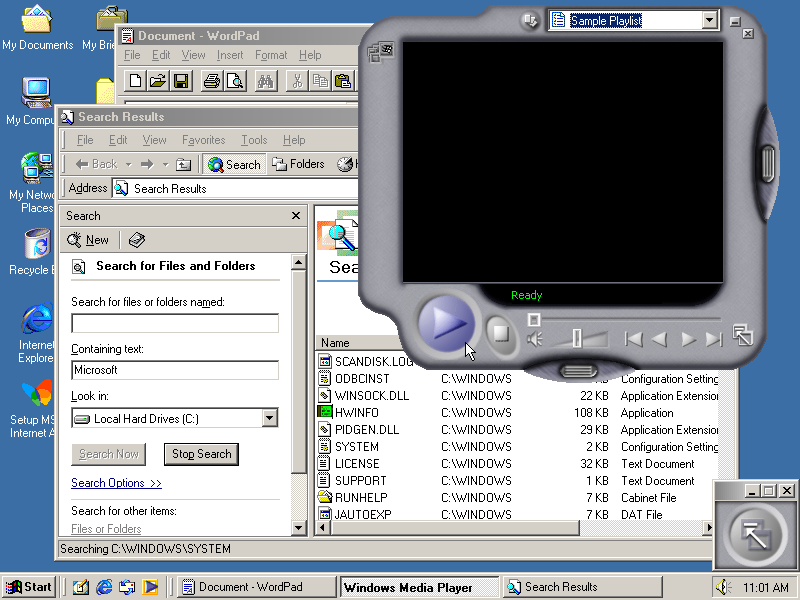
14/09/2000, Windows Me chính thức ra mắt dành cho đa phương tiện. Các phần mềm như Windows Movie Maker, Windows Media Player và Windows DVD Player ra mắt lần đầu tiên. Tuy nhiên, Windows Me lại gặp rât nhiều lỗi và được xếp vào một trong những thất bại của Microsoft.
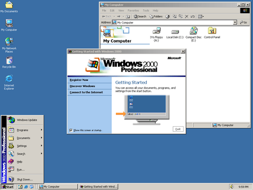
Windows 2000 được ra mắt vào 17/02/2000 dưới dạng một bản nâng cấp của Windows NT Workstation 4.0. Là phiên bản đầu tiên hỗ trợ phương pháp cập nhật Windows Update. Và cũng từ đây, Microsoft chính thức chia tay nền tảng MS-DOS, để chuyển sang công nghệ NT.
VI. 2001 - 2005: Windows XP
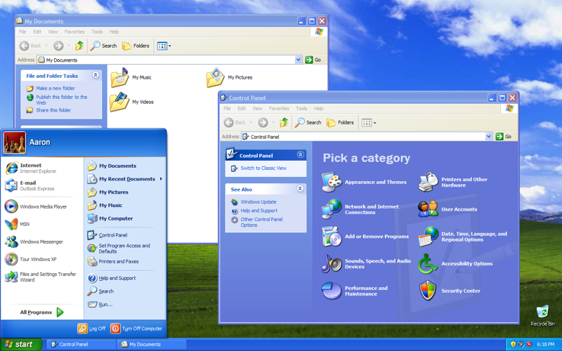
Vào 25/10/2001, Windows XP ra mắt với giao diện đẹp, sáng. Cùng với nhân NT mới từ Windows 2000. Windows XP đã trở thành huyền thoại, trở thành hệ điều hành được sử dụng lớn nhất thế giới trong suốt hơn thập niên đầu thế kỉ 21 trước khi bị Windows 7 soán ngôi vào năm 2012.
Windows XP đã kết thúc hỗ trợ bổ sung vào 08/04/2014.
VII. 2006 - 2008: Windows Vista
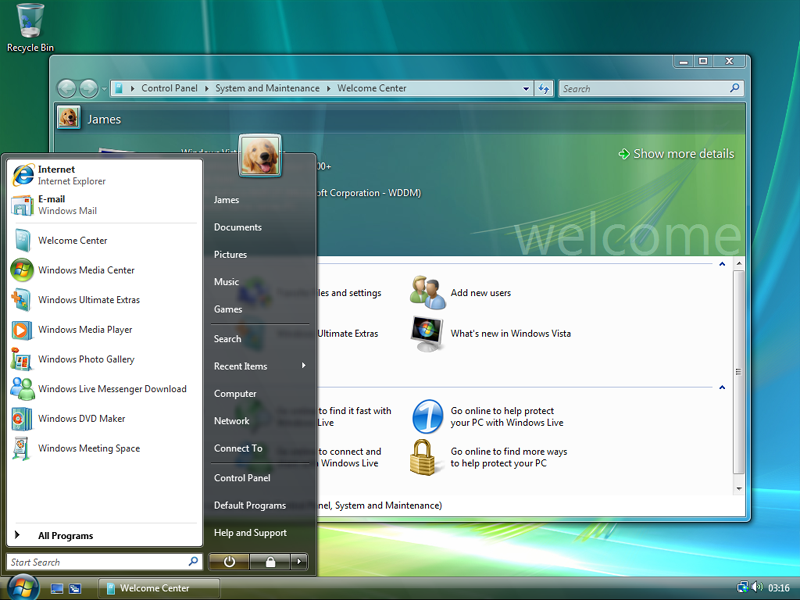
Ra mắt vào 30/01/2007, Windows Vista ra mắt với giao diện Aero Glass bóng bẩy, nhiều tính năng như Windows Defender, Windows Search, Windows Sidebar (Windows 7 gọi là Gadget) , Windows Media Center,...
Vista được phát triển trong 6 năm (từ năm 2001) với tên mã Longhorn, tuy nhiên lại ôm đồm quá nhiều tính năng trong khi vào thời đó tìm một chiếc máy tính chạy tốt Vista không hề rẻ, cũng như vài rắc rối về phiên bản 64 bit của Vista đã khiến người dùng quay lưng với hệ điều hành này. Trở thành phiên bản tệ nhất của Windows.
Hỗ trợ mở rộng cho Vista sẽ kết thúc vào 11/04/2017.
VII. 2009 - 2011: Windows 7
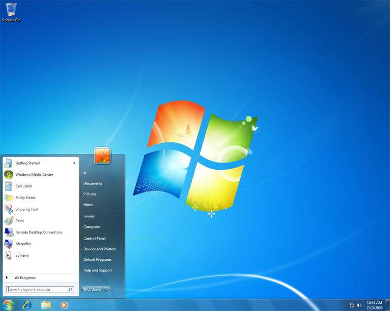
Ra mắt vào 22/10/2009 như một nổ lực của Microsoft để "chữa cháy" cho Vista. Tuy nhiên, Windows 7 lại trở thành phiên bản hệ điều hành được sử dụng nhiều nhất thế giới, vượt mặt Windows XP vào năm 2012. Tính năng không khác so với Windows Vista nhưng được cải thiện về hiệu năng. Windows 7 vẫn còn được dùng cho đến ngày nay.
Windows 7 cũng bắt đầu nhen nhóm cho kỉ nguyên thiết bị cảm ứng qua Windows Touch.
Windows 7 sẽ ngừng hỗ trợ mở rộng vào 14/01/2020.
VIII. 2012 - 2013: Windows 8
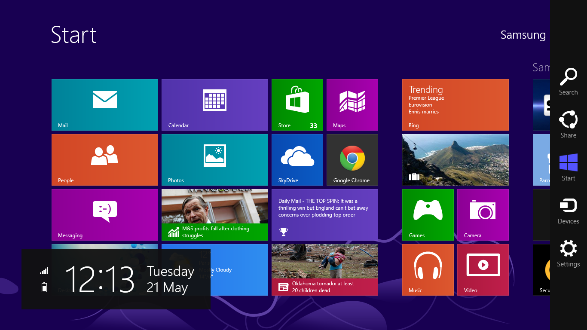
Ra mắt vào 26/10/2012, Windows 8 mang giao diện hoàn toàn mới có tên Start Screen cùng nền tảng phần mềm Windows App. Quản lí máy tính, app, key bản quyền qua Microsoft Account, lưu trữ đám mây SkyDrive. Windows 8 là câu trả lời của Microsoft trong kỉ nguyên màn hình cảm ứng và cộng nghệ đám mây. Tuy nhiên người dùng Windows từ trước đến nay đều sử dụng chuột và bàn phím. Cộng với giao diện khó làm quen đã khiến Windows 8 bị người dùng chê trách. Tuy nhiên có một điểm đáng khen đó là Windows 8 có cơ chế hybrid boot giúp thời gian khởi động của Windows 8 nhanh hơn đáng kể so với Windows 7.
XI. 2013 - 2014: Windows 8.1
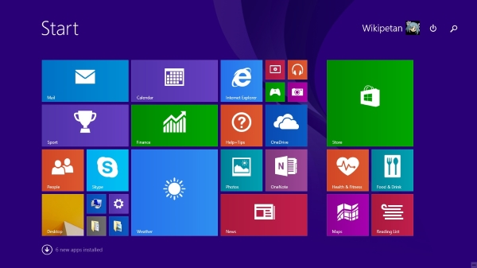
Phiên bản nâng cấp của Windows 8 có tên Windows 8.1 ra mắt vào 17/10/2013. Tập trung chủ yếu vào giao diện thân thiện hơn cho desktop và laptop sử dụng chuột và bàn phím. Tuy nhiên cũng chỉ để chữa cháy chứ không giải quyết hết vấn đề.
X. 2015: Windows 10
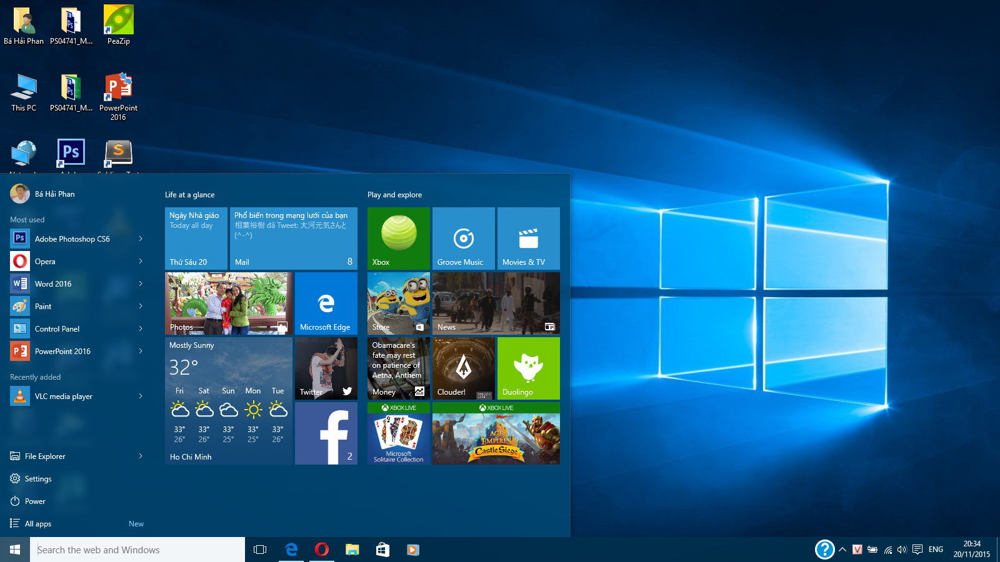
Windows 10 ra mắt vào 29/07/2015, với sự xuất hiện trở lại của Start Menu. Cùng với các tính năng mới như Cortana, Action Center, Microsoft Edge, Task View. Windows 10 sẽ là con bài trong cuộc chơi trên thị trường laptop, tablet và máy tính lai.
XI. Kết:
Trong hơn 30 năm, Windows đã làm thay đổi cách chúng ta sử dụng máy tính. Biến máy tính không chỉ là một công cụ để tính toán mà còn để giúp các công việc văn phòng, chơi game, xử lí đồ hoạ,... Thị trường máy tính vẫn còn khá nhiều biến động và Microsoft phải tập trung hơn rất nhiều trước các đối thủ khác, đặc biệt là OS X.


.png)


.png)
{kind=link}
{kind=link}
{kind=link}
{kind=link}
{kind=link}
{kind=link}
{kind=link}
{kind=link}
{kind=link}
{kind=link}
{kind=link}
{kind=link}
{kind=link}